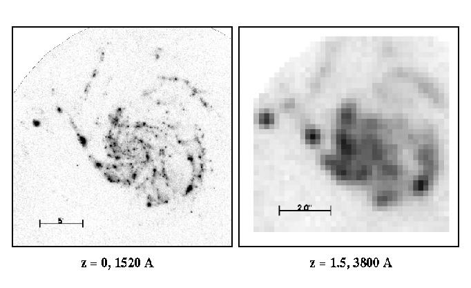

SIMULATION OF M101 SEEN AT HIGH REDSHIFT

Left panel: A far-ultraviolet (1500 A) image of the luminous Sc
galaxy M101 obtained by UIT during the Astro-2 mission. A 5-arcmin bar is
shown for scale.
Right panel: A simulation of a galaxy with the same structure
but 10X higher surface brightness observed with a blue filter by the
Keck 10-m telescope at a redshift z = 1.5 in a 10-hour exposure with
0.5-arcsec FWHM seeing against a sky background of 22.5 mag per square
arcsecond. Pixels are 0.2-arcsec square. A 2 arcsec bar is shown for
scale. The simulation is not easily recognizable as a normal spiral
galaxy. Its asymmetries are emphasized; it appears distorted and
fragmented. High surface brightness star-forming associations in its
disk have taken on the appearance of nearby "companions."
[Simulation by R. W. O'Connell and G. D. Becker, from Marcum et al. "An
Ultraviolet/Optical Atlas of Bright Galaxies," ApJ Supp, 2000.]